Astryx가 뭐고, 왜 볼 만한가요
Meta가 Astryx라는 디자인 시스템을 오픈소스로 공개했어요. 보기 좋은 React 컴포넌트 묶음으로 끝나지 않아요. 개발자와 코딩 에이전트가 같은 문서를 보고 같은 방식으로 쓰도록 처음부터 함께 설계했다는 게 차별점이에요. 공식 사이트 첫 화면 문구도 "완전히 커스터마이즈할 수 있고 에이전트에 준비된" 디자인 시스템이에요.
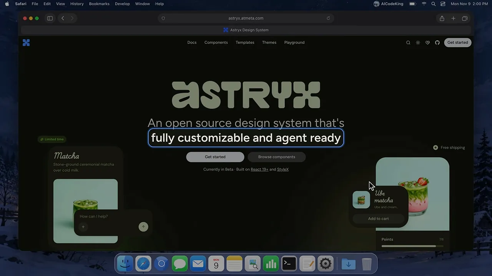
새로 만든 프로젝트도 아니에요. GitHub README 개요를 보면, 지난 8년 동안 Meta 안에서 자라 사내에서 가장 큰 디자인 시스템이 됐고 1만 3천 개가 넘는 앱이 이걸로 돌아가요. 발표자 말로는 6월에 베타로 공개했고, 영상 시점 GitHub 별은 약 1만 8,700개, 라이선스는 MIT예요.
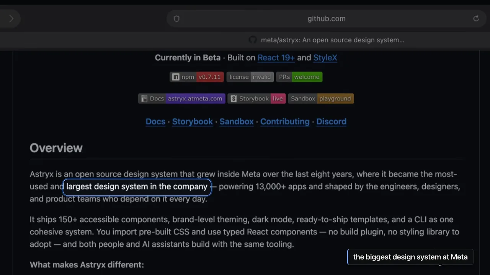
에이전트가 만든 UI는 왜 다 비슷할까요
발표자가 이걸 다룬 이유는 단순해요. 지금 에이전트에게 UI를 만들어 달라고 하면 늘 비슷한 결과가 나와요. div 덩어리, 아무렇게나 고른 hex 색, Tailwind 클래스 몇 개, 그리고 돌아가긴 하지만 어디에도 속하지 않는 레이아웃이에요. 비교를 위해 Astryx 없이 그냥 Claude Code에게 "SaaS 앱 설정 페이지"를 만들게 한 화면부터 보여 줘요.
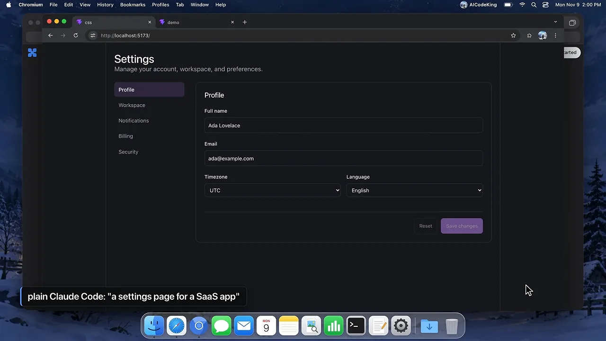
그 코드를 grep해 보면 문제가 보여요. 위쪽 네 줄은 sp-field, sp-toggle-row처럼 이 페이지에서만 쓰는 클래스 이름이고, 아래로는 #dc2626, #fff 같은 색이 CSS 곳곳에 박혀 있어요. Tailwind 버전도 클래스를 손으로 늘어놓았을 뿐 공통 규칙은 없어요.
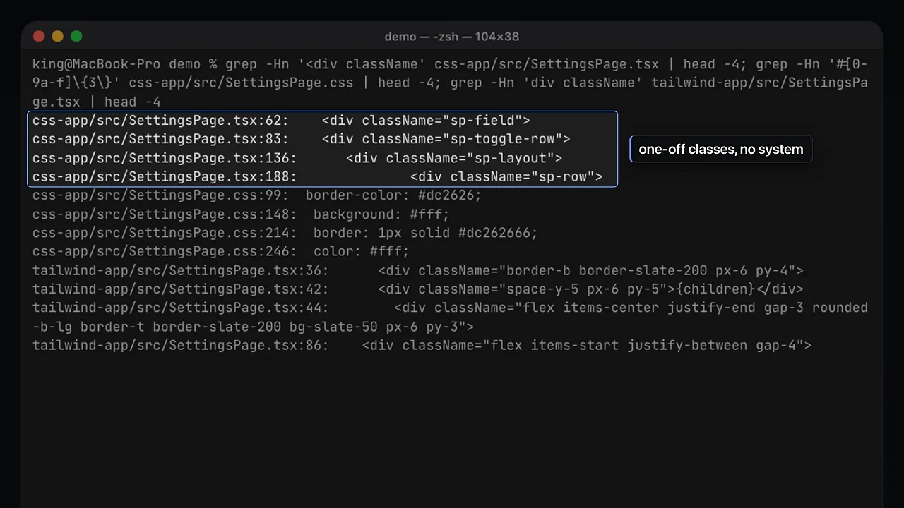
Astryx는 에이전트에게 쓸 수 있는 진짜 시스템과, 추측하는 대신 찾아볼 방법을 함께 줘서 이 문제를 풀려고 해요.
무엇이 들어 있나요
무엇이 들어 있는지부터 볼게요. 컴포넌트는 README 기준 150개 이상인데, 발표자가 설치한 CLI(Command-Line Interface)로 세어 보니 174개였어요. 접근성을 챙긴 React 컴포넌트이고 TypeScript 타입이 다 붙어 있어요. 앱 셸, 다이얼로그, 테이블, 폼, 날짜 선택기처럼 흔히 쓰는 것들이에요.
그 위에 페이지 템플릿과 블록 템플릿이 있어요. 대시보드, 로그인, 설정, AI(Artificial Intelligence) 채팅 화면처럼 통째로 된 레이아웃이라 앱에 바로 넣을 수 있어요. 사이트의 Templates 탭 위쪽 필터에 Dashboard, Login, Settings, AI Chat 같은 분류가 보여요.
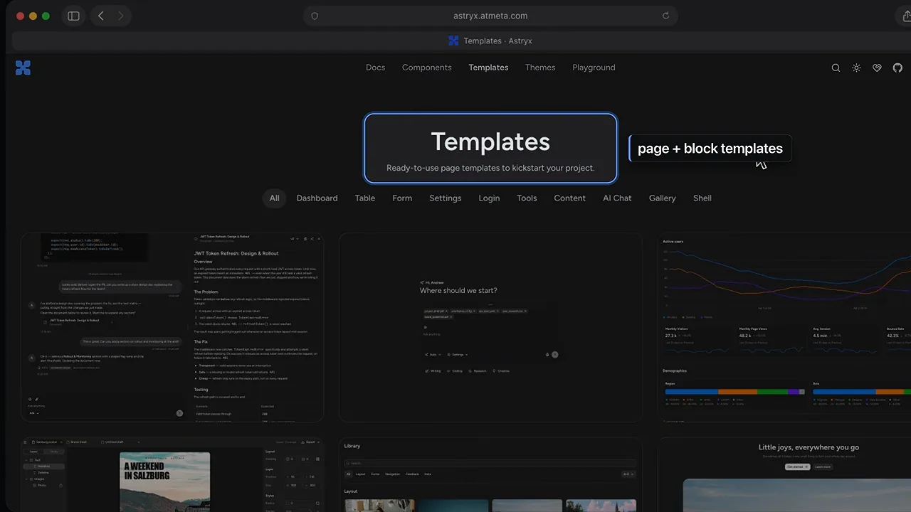
build 명령의 재료가 돼요. 영상 01:19에서 보기스타일은 내가 쓰던 방식 그대로
Astryx 내부는 StyleX로 쓰였지만, 쓰는 쪽은 StyleX를 만질 일이 없어요. 미리 빌드된 CSS 파일 두 개(reset.css, astryx.css)를 import하고 컴포넌트를 쓰면 끝이에요. 빌드 플러그인도, PostCSS 설정도, Babel 설정도 필요 없어요. 모양을 바꾸고 싶으면 className을 넘기면 되고, Tailwind든 CSS 모듈이든 일반 CSS든 프로젝트가 이미 쓰는 걸로 하면 돼요.
테마도 같은 원리예요. README의 'Customize without wrapping' 항목을 보면, 테마는 CSS 변수를 덮어쓰는 묶음일 뿐이에요. 그래서 컴포넌트를 포크하거나 감싸지 않고도 우리 브랜드처럼 바꿀 수 있어요.
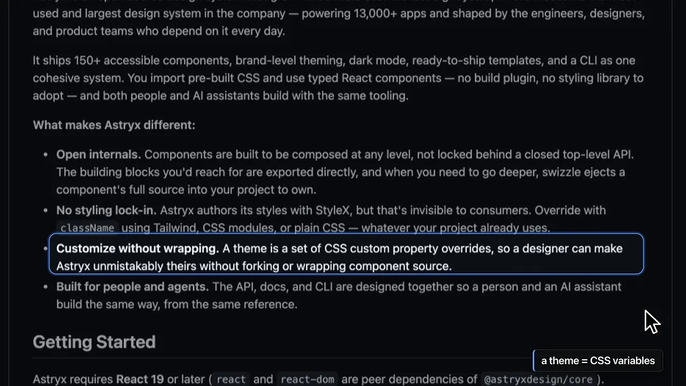
발표자는 테마가 일곱 개라며 neutral, butter, chocolate, stone, gothic, Y2K를 꼽았고, 다크 모드도 기본으로 들어 있다고 해요. 사이트의 Themes 페이지에서는 같은 쇼핑몰 예시 화면이 테마를 고를 때마다 색과 분위기를 바꿔요.
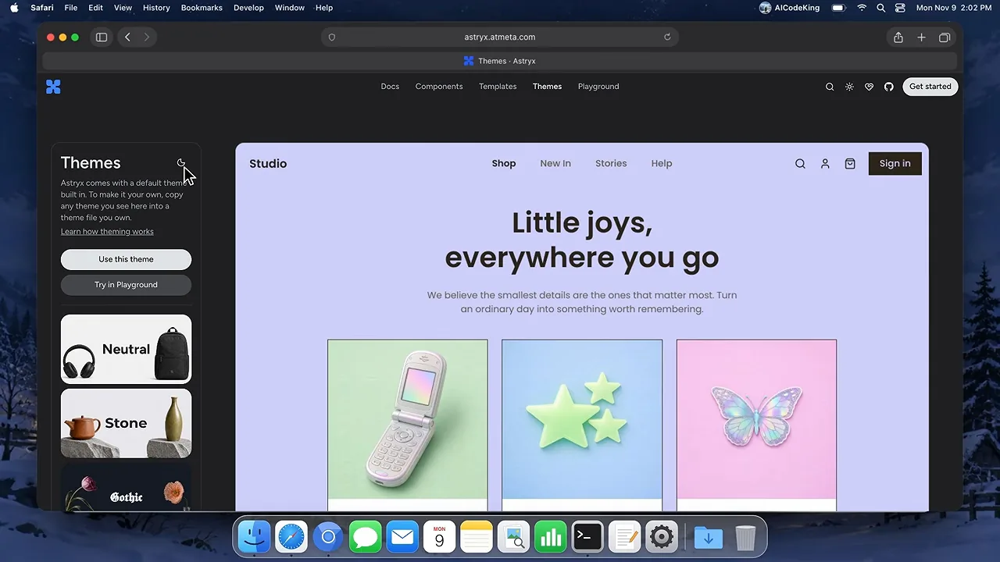
필요한 컴포넌트만 가져와 고치는 swizzle
컴포넌트를 완전히 내 마음대로 고쳐야 할 때는 swizzle 명령을 써요. 그 컴포넌트의 소스 전체를 내 프로젝트로 복사하고, 그때부터는 내 코드예요. 터미널을 보면 npx astryx swizzle Button이 파일 5개를 components/astryx/Button/으로 복사했고, 그 아래 빨간 경고로 이 컴포넌트를 쓰려면 빌드에 StyleX 컴파일러가 필요하다고 알려 줘요.
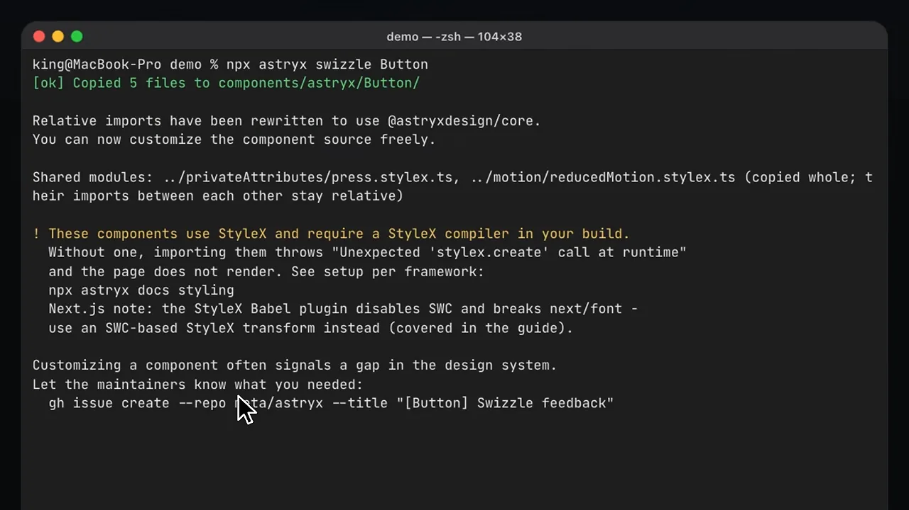
발표자는 이걸 shadcn 방식과 비슷하다고 봐요. 다른 점은 고치고 싶은 컴포넌트만 이렇게 가져온다는 거예요. 나머지 컴포넌트는 그대로 패키지에 남아서 계속 업스트림 수정을 받아요.
에이전트가 쓰는 흐름: CLI가 곧 문서
발표자가 가장 흥미롭게 본 부분이에요. Astryx의 핵심 생각은 "CLI가 곧 문서"예요. 문서 웹사이트가 CLI에서 내용을 읽어 오지, 그 반대가 아니에요. 그래서 문서는 한 벌뿐이고, 사이트와 CLI가 서로 어긋날 수가 없어요.
이 생각을 정리한 공식 블로그 글 제목이 "가장 좋은 CLI는 직접 실행할 일이 없는 CLI"예요. 사람이 아니라 에이전트가 대신 실행한다는 뜻이에요. 글 본문의 'The CLI is the docs' 단락에 같은 설명이 있어요.
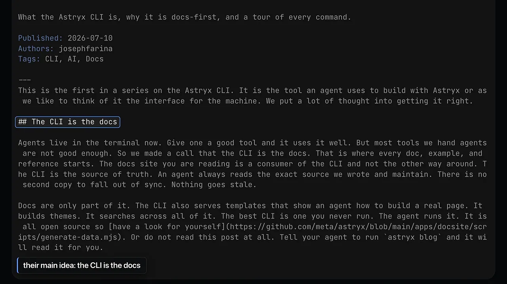
The best CLI is one you never run.
가장 좋은 CLI는 직접 실행할 일이 없는 CLI예요.
— 영상 02:14 (Astryx 블로그 글 제목)
새 프로젝트에 붙여 보기
발표자는 새 Vite React 앱을 만들고 core 패키지, neutral 테마, StyleX, CLI를 설치했어요. 여기서 함정이 하나 있어요. CLI를 프로젝트에 설치하기 전에는 npx astryx가 npm에 있는 전혀 다른 패키지를 가리켜요. 설치 전까지는 npx @astryxdesign/cli처럼 전체 이름을 써야 해요.
그다음 흐름은 아래 순서예요. 영상은 여러 화면에 걸쳐 보여 주는데, 한 줄로 이으면 이렇게 돼요.
flowchart LR A["init
지침 파일에 규칙 쓰기"] --> B["build
템플릿·블록·컴포넌트 고르기"] B --> C["template
템플릿을 프로젝트로 복사"] C --> D["component · search
쓰기 전에 찾아보기"] D --> E["doctor
끝나면 점검"]
1. init — 에이전트에게 규칙을 심어요
첫 명령은 init이에요. 쓰는 에이전트(Claude, Cursor, Codex 등)를 알려 주면, 그 에이전트의 지침 파일에 '관리 블록'을 써 넣어요. 화면에서 npx astryx init --agent claude를 실행하자 .claude/CLAUDE.md에 문서를 설치했다는 메시지가 떠요.
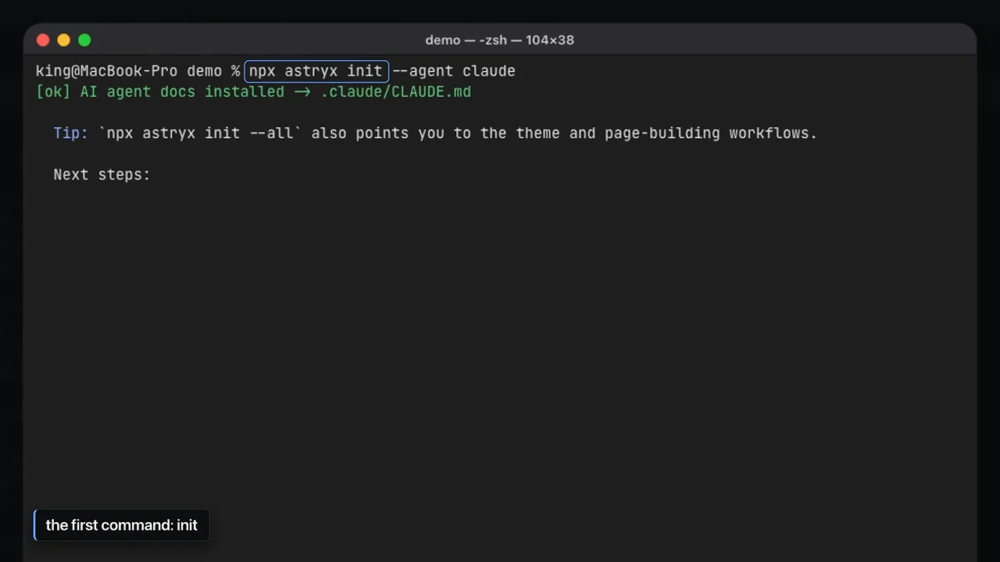
.claude/CLAUDE.md에 Astryx 사용법이 들어가요. 영상 03:10에서 보기블록 안에는 에이전트가 지켜야 할 작업 순서와 규칙이 들어 있어요. 화면의 WORKFLOW 줄은 '모든 페이지는 템플릿에서 시작하고, 처음부터 만들지 않는다'이고, 그 아래 RULES에는 div 금지, hex·픽셀 값 금지가 있어요. 컴포넌트는 쓰기 전에 찾아보고, 끝나면 doctor를 돌리라는 내용도 있어요.
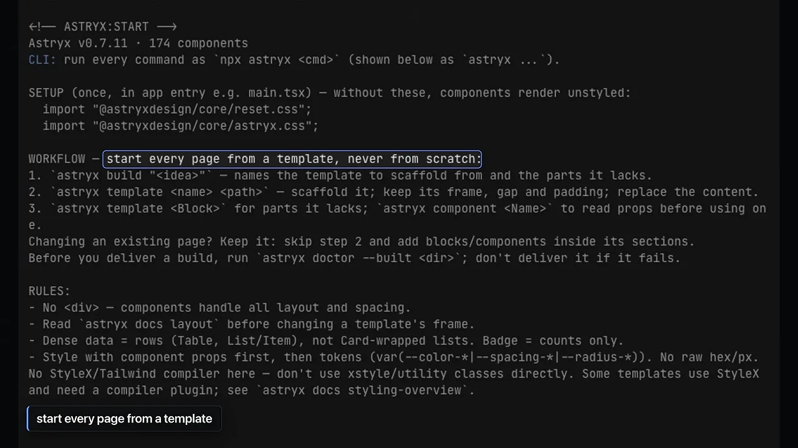
2. build — 코드 대신 조합을 골라 줘요
build는 발표자가 꽤 멋지다고 한 명령이에요. "SaaS 앱 설정 페이지"처럼 원하는 걸 평범한 영어로 말하면 코드를 만들지 않아요. 가장 가까운 페이지 템플릿을 고르고, 채울 블록을 제안하고, 남은 부분에 쓸 컴포넌트를 나열해요. 화면 결과를 보면 'Build kit'이라는 제목 아래 settings 템플릿과, 그걸 복사하는 다음 명령까지 알려 줘요.
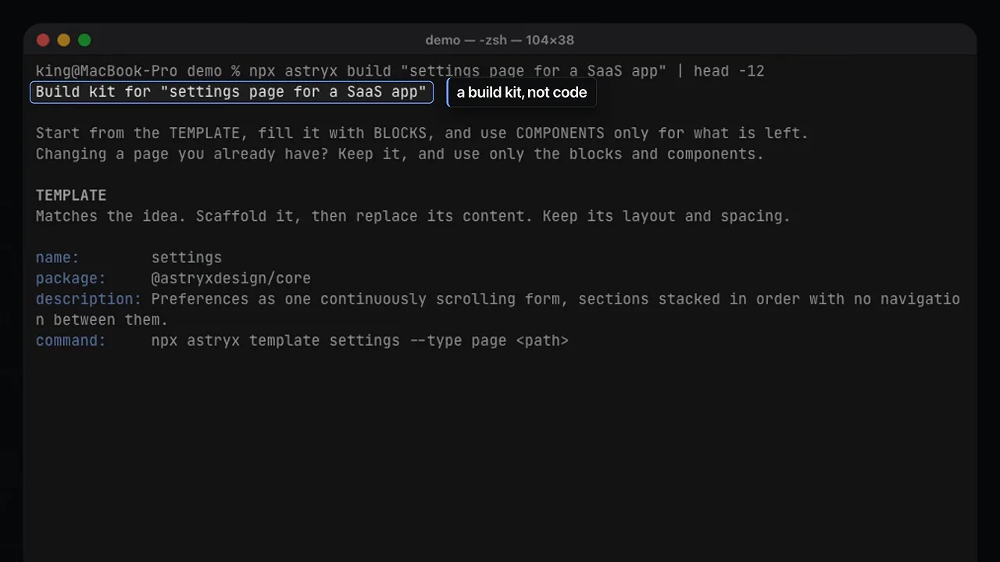
Meta가 왜 이렇게 만들었는지는 두 번째 블로그 글 제목이 말해 줘요. "AI는 따라쟁이라서, 따라 할 좋은 예시를 줬다"예요. 디자이너가 다듬은 템플릿을 CLI 한 곳에서 꺼내 주면 에이전트가 그걸 베껴서 품질 높은 결과를 낸다는 생각이에요. 발표자도 이 논리에 공감해요.
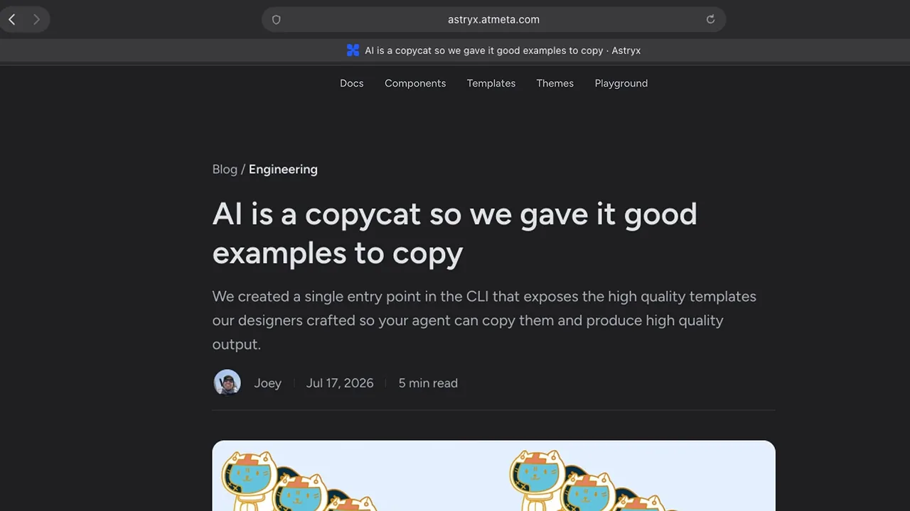
3. template — 복사하고 띄우면 끝
template 명령이 설정 템플릿을 프로젝트에 그대로 복사해요. 발표자는 theme add neutral로 테마를 넣고, main 파일에 15줄 정도를 연결한 뒤 개발 서버를 띄웠어요. 몇 분 걸렸는데, 대부분은 npm install 시간이었다고 해요. 결과 화면에는 Profile, Account, Members, Billing 같은 사이드바와 입력 폼, 저장 버튼이 간격까지 맞춰 들어가 있어요.
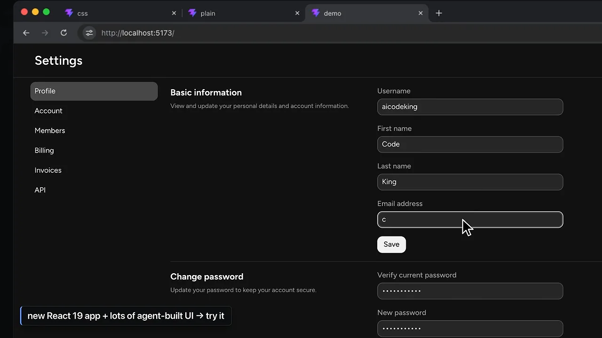
찾아보는 명령, MCP 서버, 바이브 테스트
템플릿만으로 끝나지 않아요. 에이전트가 모르는 걸 지어내지 않고 찾아볼 수 있게, 찾아보기용 명령이 여럿 있어요.
| 명령 | 하는 일 |
|---|---|
search | 컴포넌트, 훅, 문서, 템플릿, 테마를 한 번에 순위 매겨 보여 줘요 |
component | 컴포넌트 하나의 props를 정확한 타입, variant, 기본값까지 알려 줘요 |
manifest | CLI 전체를 설명해요. Meta는 'CLI용 OpenAPI 명세'라고 불러요 |
init --user | 홈 폴더에 Astryx 스킬을 써 넣고 여러 에이전트에 연결해요 |
search button을 실행하면 Button, IconButton 같은 컴포넌트와 useClickableContainer 같은 훅이 함께 나와요. 항목마다 어느 패키지에서 import하는지, 무엇에 쓰는지, 자세히 보려면 어떤 명령을 칠지가 붙어 있어요.
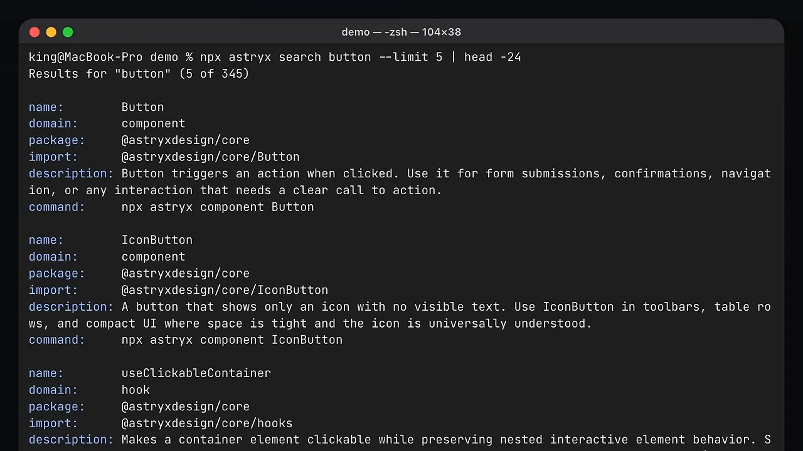
component Button --props --json은 props를 JSON(JavaScript Object Notation)으로 돌려줘요. variant는 primary, secondary, ghost, destructive 중 하나이고 기본값은 secondary, size는 sm, md, lg에 기본값 md처럼 정확히 나와요. 그래서 에이전트가 없는 props를 지어낼 이유가 없어요. 모든 명령이 안정적인 에러 코드를 담은 JSON으로 답할 수 있고, 토큰을 아끼는 압축 모드도 있어요.
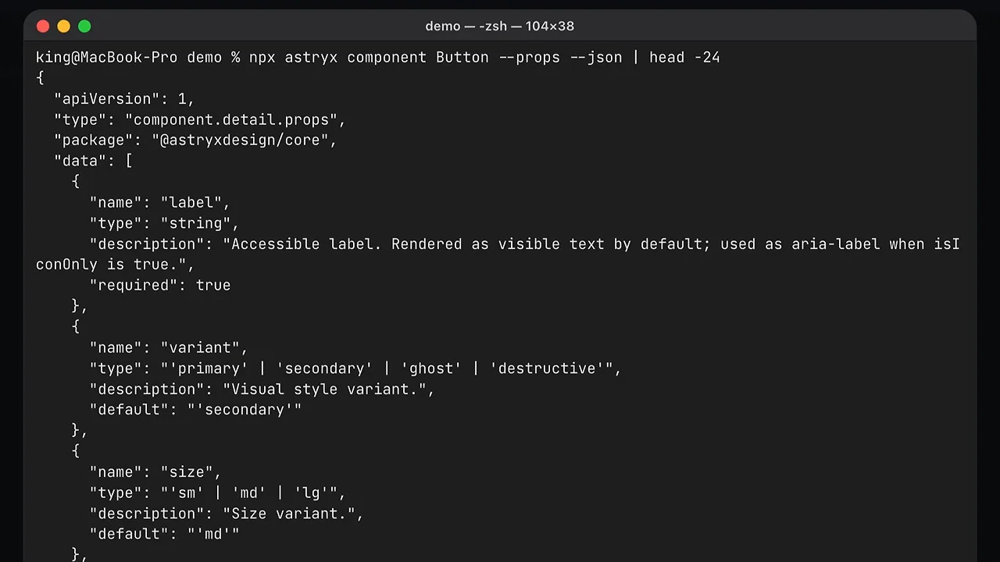
CLI가 싫다면 MCP 서버로
CLI를 아예 쓰고 싶지 않다면 호스팅된 MCP(Model Context Protocol) 서버가 있어요. Claude Code에 명령 한 줄(claude mcp add --transport http astryx https://astryx.atmeta.com/mcp)로 추가하면, 에이전트가 search와 get 두 도구를 얻어요. 둘 다 CLI와 같은 문서에서 내용을 가져와요. 사이트에는 llms.txt 파일도 있어요.
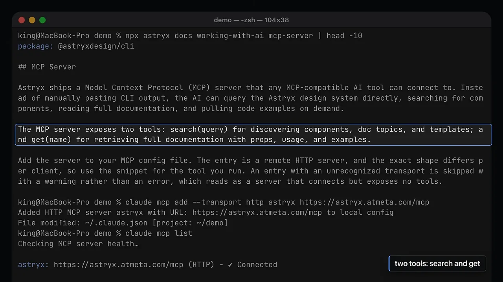
search와 get 두 개뿐이에요. 영상 04:56에서 보기CLI를 전역으로 설치하고 init --user를 돌리면, 홈 폴더의 ~/.agents/skills/astryx/SKILL.md에 스킬을 쓰고 ~/.claude/skills/astryx로 연결해요. 그러면 어떤 프로젝트를 열어도 에이전트가 이미 Astryx를 알아요.
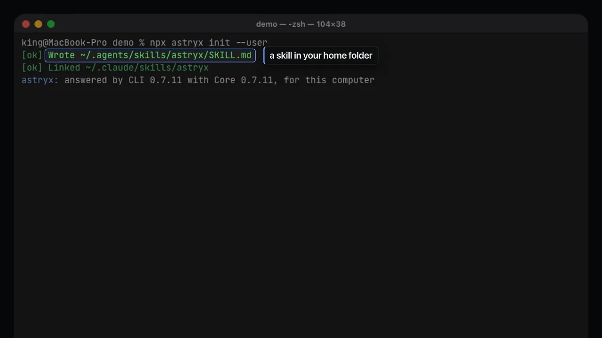
매일 밤 직접 채점해요
발표자가 좋게 본 또 하나는 이걸 실제로 측정한다는 점이에요. 저장소에는 '바이브 테스트' 폴더가 있어요. 화면의 Prompt Battery 설명을 보면, 프롬프트마다 에이전트에게 주는 과제(prompt)는 모든 설정에서 똑같고, 기대 컴포넌트 목록은 채점에만 쓰고 에이전트에게는 보여 주지 않아요.
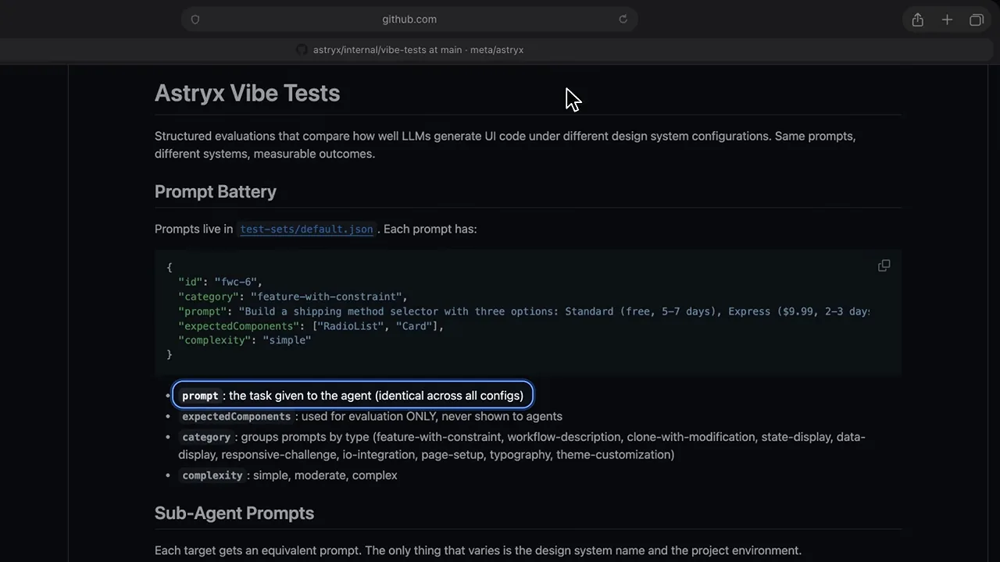
매일 밤 같은 UI 프롬프트를 네 가지 방식으로 만들게 해요. Astryx, Astryx+Tailwind, shadcn+Tailwind, 날 HTML(HyperText Markup Language)이에요. 그다음 별도의 심판 에이전트가 결과를 채점해요. 좋은 날의 점수표를 보면 Astryx 98, Astryx+Tailwind 97, shadcn 95, 날 HTML 82예요.
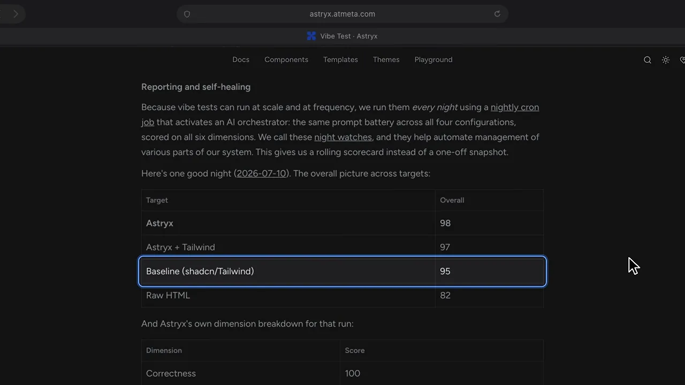
나쁜 날도 공개했어요. 그날 Astryx는 전체 77점으로 떨어졌는데, 항목별로 보면 접근성 98, 코드 품질 99는 그대로이고 정확성(Correctness)만 2점이에요. 에이전트가 없는 import와 props를 지어냈기 때문이에요. 그리고 전체 기록으로는 shadcn이 이긴 날이 가장 많다고 스스로 밝혀요. 발표자는 좋은 차트만 보여 주는 회사가 대부분인데 이걸 숨기지 않은 점을 높이 사요.
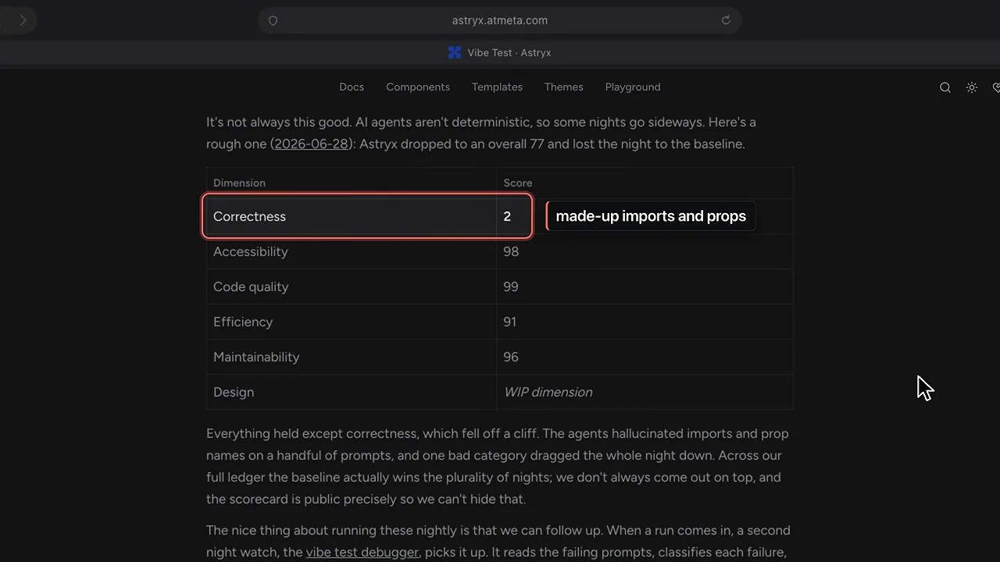
단점과, 누구에게 맞는지
발표자는 단점도 꽤 짚어요. 한데 모으면 이래요.
| 단점 | 무엇이 문제인가요 |
|---|---|
| 아직 베타, 0.7 버전 | 거의 매일 새 릴리스가 나와요. 계속 바뀐다고 생각해야 해요 |
| React 19, Node 22.13 이상 | React 18 앱이라면 아직 쓸 수 없어요 |
| 유지 관리 테마는 neutral 하나 | 다른 테마는 패키지를 따로 설치해야 해요 |
| 차트는 카나리 채널에만 | 안정판 차트 패키지가 아직 없어요 |
| swizzle 후 StyleX 컴파일러 필요 | 빌드에 넣지 않으면 그 페이지가 렌더링되지 않아요 |
| 엄격한 에이전트 규칙 | div 금지, hex 금지가 Tailwind 유틸리티 중심 팀과 부딪힐 수 있어요 |
| 번들 크기 | 데모 페이지 하나가 gzip 전 JS(JavaScript) 약 600KB였어요 |
버전 조건은 직접 확인할 수 있어요. 화면에서 npm view @astryxdesign/core peerDependencies로 피어 의존성을 보면 react: '>=19.0.0'이 강조돼 있고, astryx doctor는 Node v22.22.3이 최소 조건(22.13.0)을 넘는다고 알려 줘요.
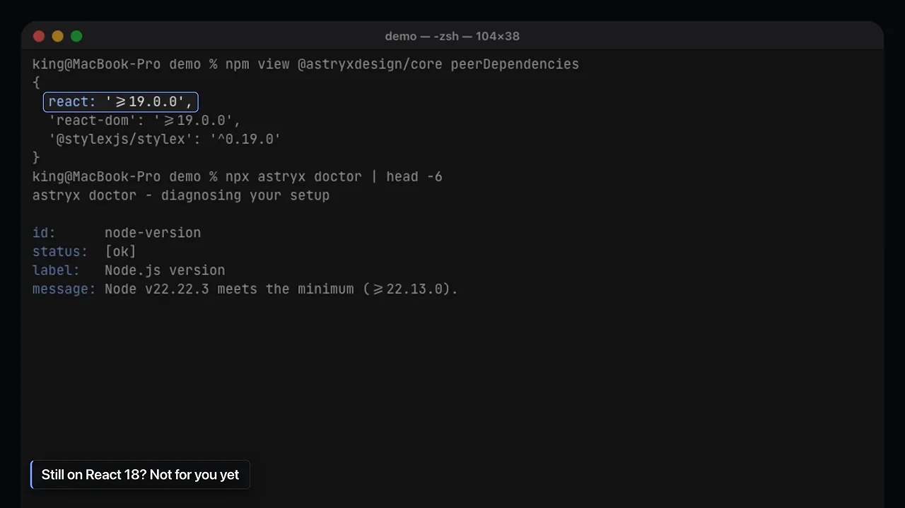
번들 크기는 vite build 결과로 보여 줘요. 가장 큰 JS 파일이 601.01kB, gzip하면 191.04kB예요. Vite도 500kB가 넘는 청크가 있다고 경고해요.
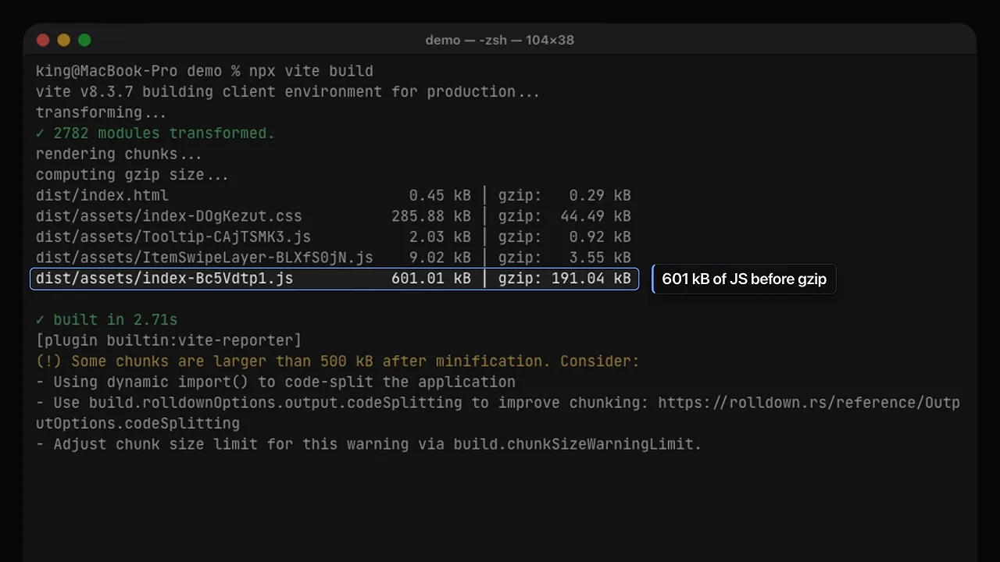
그래서 써야 할까요
발표자의 답은 상황에 따라 갈려요. 새 React 19 앱을 시작하면서 에이전트로 UI를 많이 만든다면 써 볼 만하다고 해요. 템플릿, build 명령, 'CLI가 곧 문서'라는 생각이 에이전트가 만드는 결과를 실제로 바꾸고, 첫 페이지부터 그 차이가 느껴진다는 거예요.
반대로 이미 shadcn이나 MUI(Material UI) 위에 자리 잡은 앱이라면, 베타가 끝날 때까지 조금 기다리라고 해요. 그 전에 사이드 프로젝트에서 먼저 써 보는 걸 권해요.